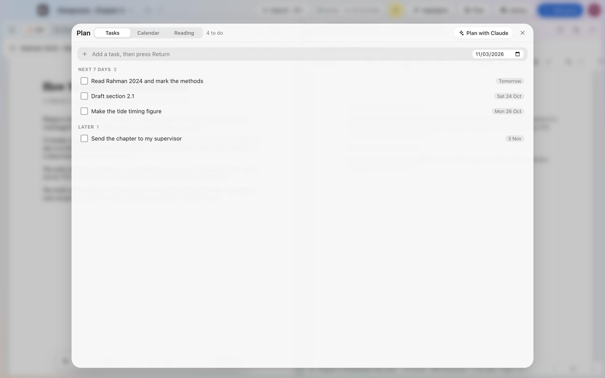

Up to ten panes
Split the screen into PDFs, websites, documents and AI chats. Drag to resize or swap. Reopen a project and everything is exactly where you left it.
Free public beta · for Mac
SoCubes puts your PDFs, websites, notes and Claude next to each other on one screen. Mark up the paper you’re reading, write with real citations, and keep every deadline in view.
macOS 14 Sonoma or later · Apple chip and Intel · Free during the beta

Split the screen into PDFs, websites, documents and AI chats. Drag to resize or swap. Reopen a project and everything is exactly where you left it.
Pen, highlighter, shapes, sticky comments and voice notes, with words written out for you. Download the PDF with your marks in it.
A proper writer with styles, comments and page layout. Type @ to cite a paper; the bibliography builds itself in APA, MLA or Chicago. Export to Word.
Claude reads the PDFs in your project and answers with the page it found it on. Check the claims in your draft against your sources. Uses your own Anthropic key.
Tasks with dates and checklists, a calendar and a reading list. Mention a paper, a highlight or an idea card right in a task. See this week across every project.
Every file in one place, with folders, tags and a reading list. ⌘K searches every PDF, note, comment and voice note. Save any web page as a PDF to cite.

Sign in on your other Macs and your projects, PDFs, marks and notes are there, backed up to your account. It all works offline too, and catches up when you’re back.
Lock a project with Touch ID, a passcode or an authenticator app. Claude chats, browsing history and website logins never leave your Mac.
Click Download for Mac and open SoCubes.dmg from your Downloads.
Drag the SoCubes icon onto the Applications folder in the window that opens.
During the beta, SoCubes isn’t verified by Apple yet, so the first time macOS says it can’t check it. Click Done, then open System Settings › Privacy & Security, scroll down and click Open Anyway next to SoCubes. You only do this once.
Sign up with your email. We send a code to confirm it, and you’re in. Your first project is one name away.
Yes, completely free while SoCubes is in beta.
Apple checks apps that aren’t from the App Store. SoCubes is going through that check now; until it’s done, macOS asks you to confirm once (step 3 above). Updates after that will open without the warning.
You add your own key from Anthropic in Settings. It’s kept in your Mac’s Keychain, and your questions go from your Mac straight to Anthropic. You can also sign in to ChatGPT, Gemini, Perplexity, Grok or Copilot right inside a pane.
On your Mac first, and backed up to your SoCubes account so they appear on your other Macs. Only you can see them. Read the privacy page for the details.
Yes, they’re on the way, with the same account, so your desk follows you there too.
SoCubes tells you when a new version is out. Click Download, then drag it to Applications again; your projects stay just as they are.
Write to us on the contact page. Say what you did and what happened; we read every message.